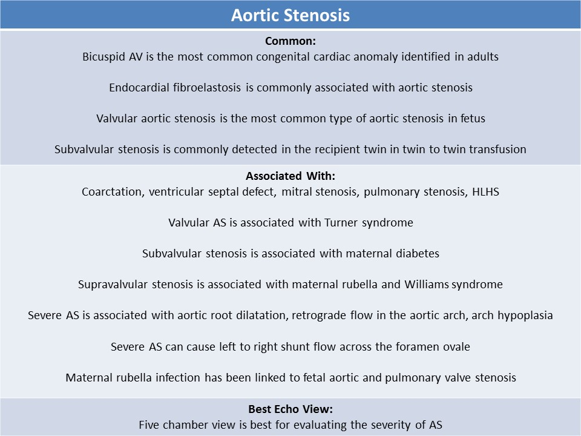
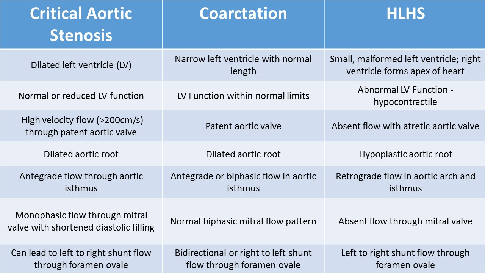

.jpg)
Aortic Stenosis
General Information:
- Obstruction of the left ventricular outflow tract
- 3-6% of fetuses with congenital heart disease
- Highest risk of occurrence seen with maternal history of congenital aortic stenosis
- Male dominance
- Associated syndrome: Noonan syndrome, Shone syndrome, Turner syndrome, Williams syndrome
- Maternal rubella infection has been linked to fetal aortic stenosis
- Endocardial fibroelastosis is commonly associated with aortic stenosis
- Other associated findings include mitral stenosis, VSD and coarctation
- Site of obstruction will demonstrate turbulent flow
- Critical stenosis can develop into hypoplastic left heart syndrome
- Valvular
- Hypoplasia of aortic annulus, abnormal leaflet formation
- unicuspid - severe obstruction
- bicuspid - two cusps fused with restrictive motion ( most common congenital cardiac anomaly identified in adults)
- Most common type of aortic stenosis in fetus
- Associated cardiac anomalies: coarctation, ventricular septal defect, mitral stenosis, HLHS
- Has increased risk of developing hydrops
- Associated with Turner syndrome
- Subvalvular
- Discrete subaortic membrane
- 2nd most common
- Associated with maternal diabetes
- 50-65% have other cardiac defects - VSD, interrupted arch and coarctation
- Commonly detected in the recipient twin in twin to twin transfusion due to increased preload and corresponding LV hypertrophy
- Supravalvular
- Narrowing of the ascending aorta originating just above the origin of the coronary arteries
- 50-75% have hourglass deformity, can also be caused by discrete membrane or diffuse thickening
- Associated with maternal rubella and Williams syndrome
- If peripheral pulmonary artery stenosis is also identified, there is a strong indication of Williams syndrome
 
- Five chamber view is best for evaluating the severity of AS
- Abnormal four chamber view-severe AS with poor left ventricular function and increased chamber size
- Increased left heart pressures can lead to left to right interatrial shunt
- Increased endocardial fibroelastosis on left ventricular walls and papillary muscles
- Moderate AS
- Possible normal or mildly hypertrophied left ventricle
- Mild mitral regurgitation
- Increased aortic valve velocity
- Restrictive mitral valve motion secondary to increased left ventricular pressure
- Aortic root measured as smaller than normal (should be measured in the long axis view of the aorta)
- Critical AS:
- Associated with left ventricle and aortic root dilatation with arch hypoplasia
- Peak aortic velocity >200cm/s
- If serial exams are performed and the peak velocity through a critical aortic stenosis decreases, progessive left ventricular dysfunction should be suspected
- Flow reversal seen in the aortic arch
- Affects LV inflow causing reduced E and A velocities with a small waveform obtained from the mitral valve
- Can cause congestive heart failure, fetus should be evaluated for signs of fluid collection/effusion/hydrops
Neonatal echo with unicuspid aortic valve
Modified long axis view of the aortic valve; Color Doppler displays turbulent flow through the aortic valve; mitral regurgitation with mildly depressed left ventricle
Severely enlarged left atrium with elevated left atrial pressure; Left ventricle appears to be thickened with depressed function secondary to aortic stenosis
Color Doppler displays severe mitral regurgitation